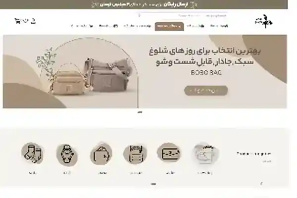
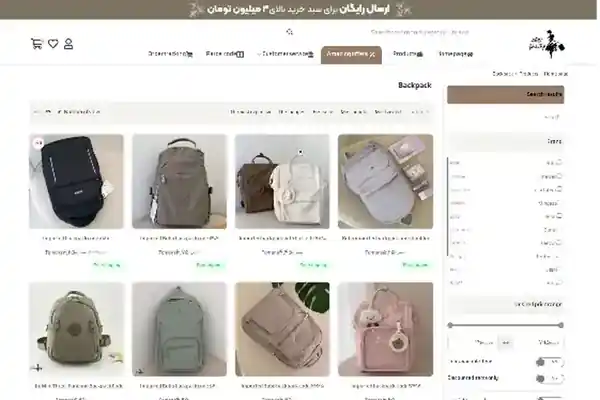

Anteprime locali incluse nel portfolio: home page e pagina categoria.
Contesto
Il progetto richiedeva un e-commerce capace di gestire numerose categorie di prodotto e percorsi di acquisto e assistenza facilmente accessibili.
La sfida
Rendere navigabile un catalogo articolato e mantenere coerenti nel tempo le funzioni di e-commerce, account e customer service.
Il mio contributo
- Progettazione completa del sito e-commerce WordPress/WooCommerce.
- Struttura categorie, pagine prodotto, navigazione e layout responsive.
- Configurazione e manutenzione di plugin, hosting, database, SSL/HTTPS e funzionalità negozio.
- Gestione di sicurezza, backup e recovery.
Risultato / consegna
Un e-commerce strutturato per catalogo, ricerca e percorso cliente, con una base tecnica mantenibile nel tempo.
Il case study descrive esclusivamente il lavoro svolto da me nel periodo indicato. Dove il mio contributo era solo SEO, questo è dichiarato esplicitamente.